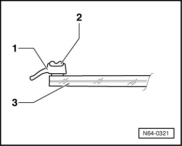
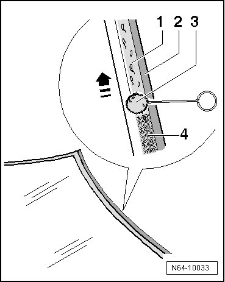
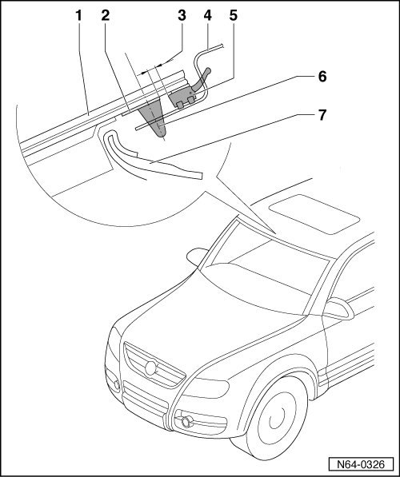
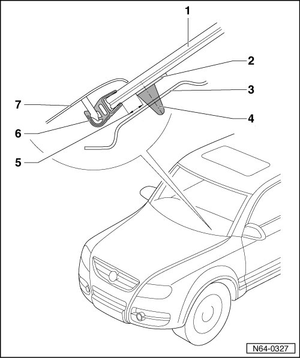
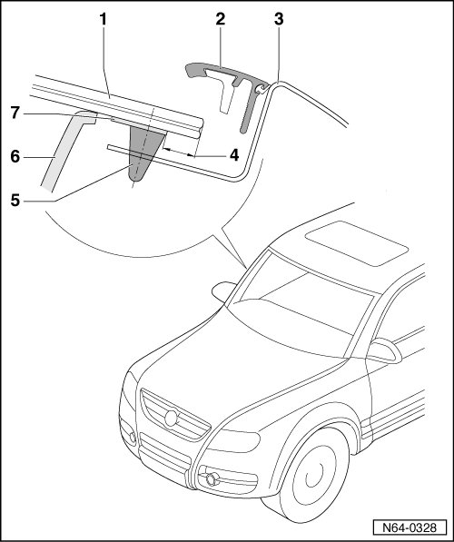

New Window, Preparing For Glazing
Flush Bonded Windows
New Window, Preparing for Glazing
On all new windows, only the ceramic layer is applied. The sealing lip is injection molded.

1 Sealing lip
2 Spacer
3 Window
• The application area for adhesive bead 3 is not pre-coated and not primed.
- Clean window circumference to width of 20 mm all around using cleaning solution D 009 401 04.
- Then dry the edge of the window with a lint-free cloth.
CAUTION!
The ceramic coating on the glass is not a glass/paint primer. It must be primed before the application of adhesive sealing material! Use only glass/paint primer D 009 200 02.
- Apply the glass/paint primer - 4 - evenly in one motion using applicator D 009 500 25 - 3 - to the previously cleaned area - 1 - of window.

Make sure that glass adhesive is applied to primed area at a distance of approximately. 2 mm from sealing lip - 2 -.
• Air dry time approximately. 10 minutes
Observe differing distances to edge of window along upper edge, the lower edge and side edges.
Dimension for Adhesive Bead and Glass/Paint Primer on Upper Edge of Window

1 Windshield
2 Glass/paint primer
• Apply 20 mm wide bead at distance of 3 mm from sealing lip.
3 Distance dimension
• The distance from the sealing lips to the edge of the adhesive bead that is to be applied is 3 mm
4 Roof frame
5 Sealing lip
6 PUR adhesive sealant
7 Headliner
Dimension for Adhesive Bead and Glass/Paint Primer on Lower Edge of Window

1 Windshield
2 Glass/paint primer
• Apply 20 mm wide bead at distance of 16 mm from sealing lip.
3 Cowling
4 PUR adhesive sealant
5 Distance dimension
• The distance from the sealing lips to the edge of the adhesive bead that is to be applied is 16 mm
6 Binding profile
7 Plenum Chamber Cover
Dimension for Adhesive Bead and Glass/Paint Primer on Side Edge of Window

1 Windshield
2 Drip rail
3 A-pillar
4 Distance dimension
• The distance from the sealing lips to the edge of the adhesive bead that is to be applied is 6 mm
5 PUR adhesive sealant
6 Interior trim
7 Glass/paint primer
• Apply 20 mm wide bead at distance of 6 mm from sealing lip.